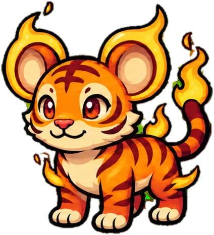

 Fire
FireTap a stage to read its story.
Embercub is an orange tiger cub with bold dark stripes and large round eyes that glow warm amber. A small flame-crest burns at its forehead, and its round ears are tipped in fire-orange. It tumbles and wrestles with the volcanic rocks at Dragon Spire's base, batting sparks off the obsidian with its paws and then jumping back in surprise. The guardians say no cub born on Dragon Spire has ever left without scoring its name into the stone first.
Field note: Embercub presses its nose to rock and sniffs for the faintest trace of magma heat - it can sense eruptions twelve hours early.
Dragon Spire. Embercub and its family are found in the Dragon Spire. See everyone who lives there.
Share a Bond Food that matches its types to become friends. Embercub loves:
A Bond Food is not a trick. It joins your spirit with the Kimuro's spirit, and only when it chooses you.
Print the Kimuro adventure packs: mazes, cards, a board game and Bond Mark medals.
See the printable packs